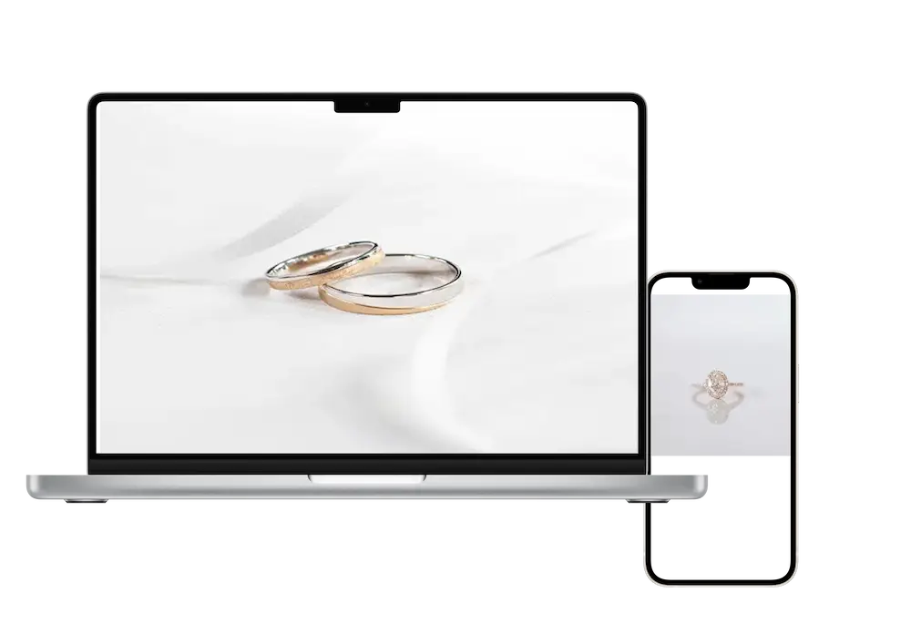

ターゲット Target
自分らしさを表現できるアクセサリーを探している、20〜40代の女性。
ハンドメイドアクセサリーのランディングページを制作しました。

本プロジェクトはポートフォリオ用に制作した仮想案件です。
作家の想いや商品の魅力を伝えながら、ユーザーがスムーズに商品を探し購入できる体験を目指しています。
温かみのあるデザインと視認性の高いレイアウトを両立し、ブランドイメージの向上と購買促進を目的としています。
また、SNS経由の流入が多いため、初めて訪れるユーザーにもブランドの魅力が伝わる設計が求められます。
レスポンシブ対応を行い、スマートフォンでも快適に閲覧できるよう実装しています。
ハンドメイドアクセサリーの企画・製作・販売を行うD2Cブランド
20〜40代の女性、量産品ではなく特別感のあるアクセサリーを求めている。
一点一点手作業で制作されたオリジナルアクセサリーで、素材やディテールにこだわった高品質な商品。
SNS経由で一定の集客はできているが、商品やブランドの魅力を十分に伝えられる販売チャネルが不足している。
2026年6月6日〜2026年6月7日(2日)
HTML / CSS / javascript
デザイン / コーディング
ブランドの世界観と商品の魅力を効果的に伝え、ユーザーが安心して商品を購入できるECサイトを構築する。あわせて、商品検索性や回遊性を向上させ、購入率の向上を目指す。 また、スマートフォンからの閲覧にも配慮し、幅広いユーザーにとって使いやすいUI設計を行いました。
自分らしさを表現できるアクセサリーを探している、20〜40代の女性。


ハンドメイドアクセサリーの温かみと上質感を表現しました。アクセントカラーで、商品写真が引き立つデザインを意識しています。 また、情報を整理して配置することで、ユーザーが迷わず閲覧できる読みやすいUIを実現しています。
サロンの世界観と情報の見やすさを両立し、各デバイスで快適に閲覧できるWebサイトとして制作しました。